Revision 03 video receipt + timecoded screenplay
Watch the revision 03 review videoComment on the Google Doc screenplayOpen the final article source + Casey edit logOpen the published article: The Keymap Is the Score
Comment on the words or image you want changed and include the stable scene ID. Script, timing, image choice, and crop notes are all welcome.
The current voice is a temporary guide. This screenplay is the review surface before Jeffrey records the final narration in Narrator Wizard.
Casey’s copy feedback. Corrected the Æther description, replaced the limiting “same question” conclusion, and incorporated the accepted Google Doc copy edits into the published article and screenplay.
Event documentation. The closing now moves through Casey’s June 13 Fuser photographs: the room, presentation, cohort, audience, and floor performance.
Final polish. Changed the edition line to “copy #51,” kept Banyi Huang’s artist/title credit in one utterance, animated credit letters individually, softened the SO/SOFT response into a wobble, and widened Jordan Silver’s sheet evidence.
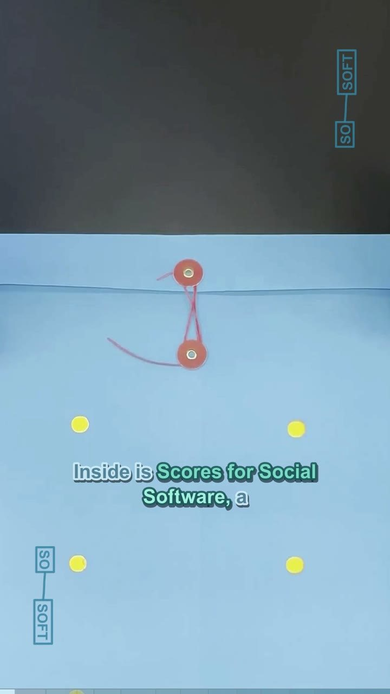
Narration. This blue folder just arrived from Social Software at UCLA. Inside is Scores for Social Software, a spring 2026 edition of 64 hand-produced artist scores. This is copy #51, assembled after ten weeks of making, testing, and performing together.
Comment with SSF-00 to request a script, timing, image, or crop change.
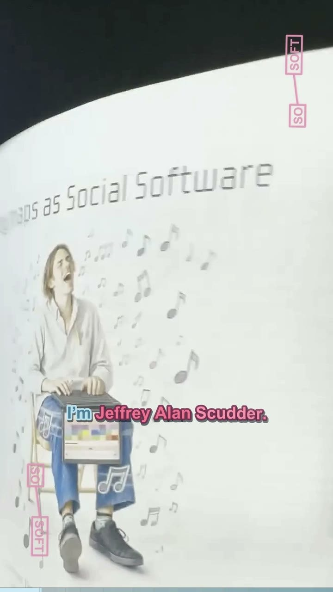
Narration. I’m Jeffrey Alan Scudder. My contribution is Notepat, a folded white research paper that combines an illustrated player, a QR code, instructions, and circular keyboard diagrams.
Comment with SSF-01 to request a script, timing, image, or crop change.
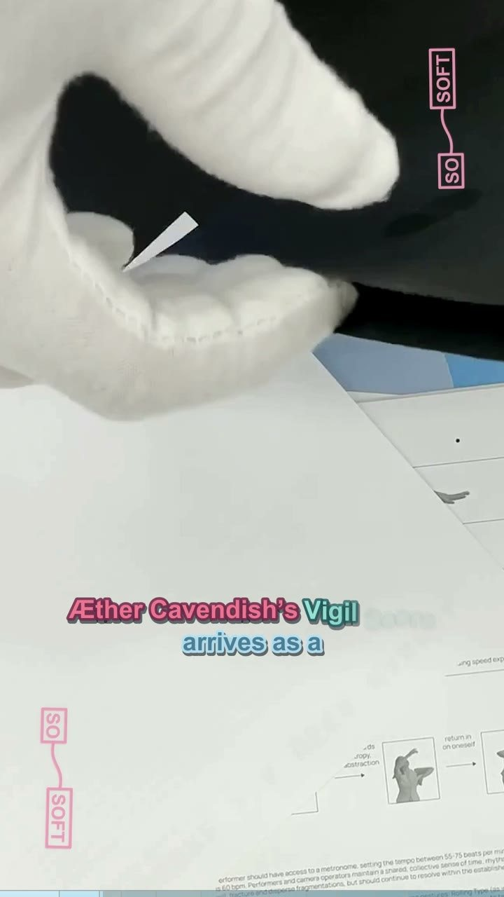
Narration. Æther Cavendish’s Vigil Score arrives as a matte-black folded packet, closed with a small circular silver seal.
Comment with SSF-02 to request a script, timing, image, or crop change.
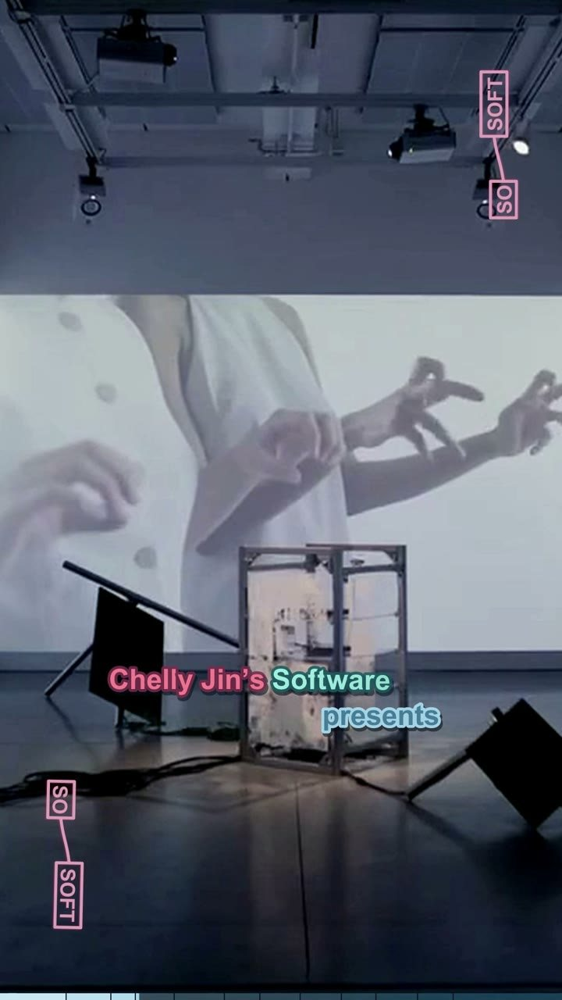
Narration. Chelly Jin’s Software as a Choreography presents a grid of silhouetted hands and arms, pairing each gesture with marks for timing and movement.
Comment with SSF-03 to request a script, timing, image, or crop change.
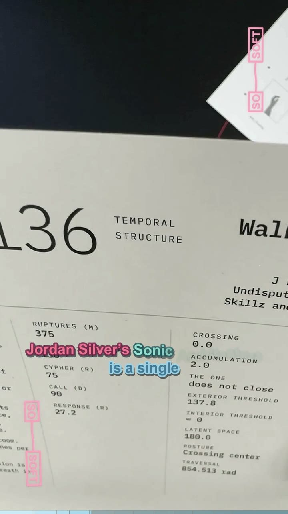
Narration. Jordan Silver’s Sonic Architecture is a single sheet of printed columns, large numbers, and typewritten commands, anchored by a looping spiral diagram for inhabiting and measuring space through sound.
Comment with SSF-04 to request a script, timing, image, or crop change.
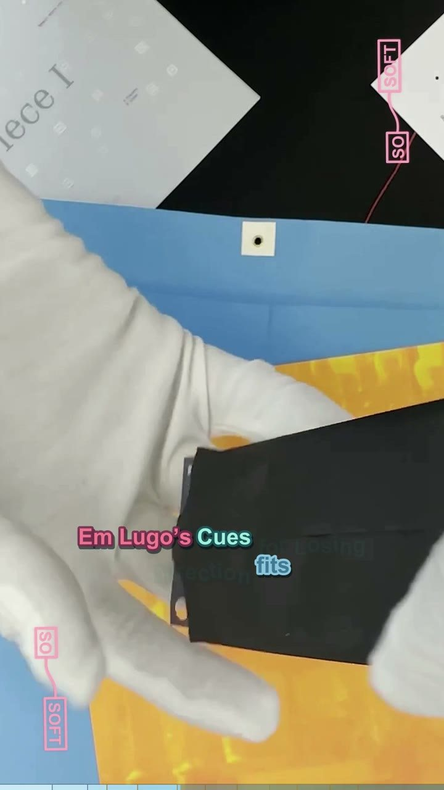
Narration. Em Lugo’s Cues for Losing Direction fits on a small black card, its title set in pale condensed type like a portable instruction carried in the hand.
Comment with SSF-05 to request a script, timing, image, or crop change.
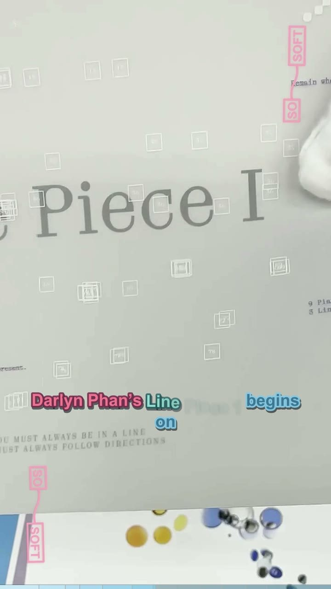
Narration. Darlyn Phan’s Line Piece 1 begins on translucent white paper. Its faint rainbow cast and minimal title let the page behave like a line or veil.
Comment with SSF-06 to request a script, timing, image, or crop change.
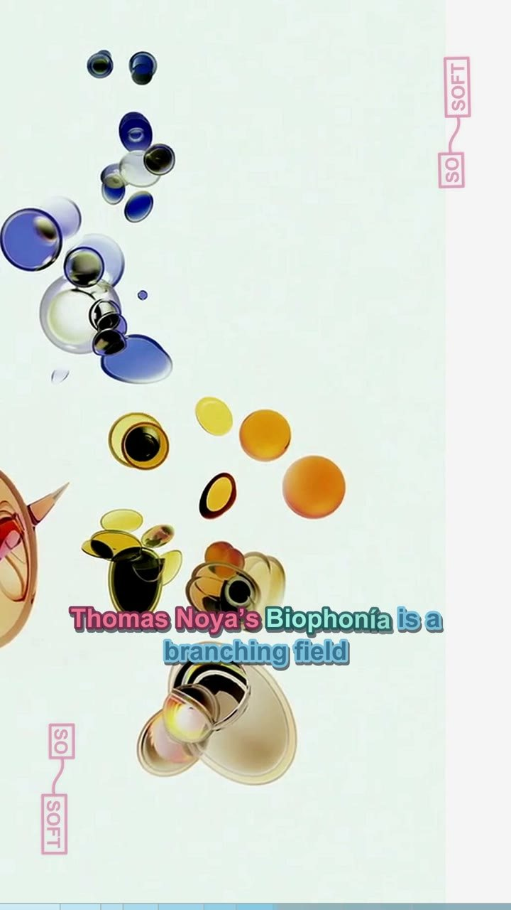
Narration. Thomas Noya’s Biophonía is a branching field of blue, yellow, black, and beige organic forms. In the video, these cell-like clusters drift and reorganize.
Comment with SSF-07 to request a script, timing, image, or crop change.
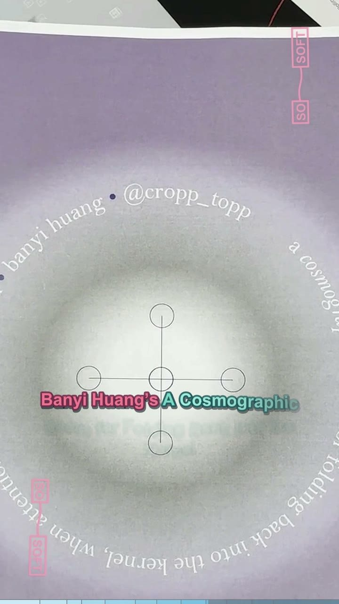
Narration. Banyi Huang’s A Cosmographic Score for Folding Back into the Kernel centers a luminous circle and a small diagram of connected nodes inside a lavender field.
Comment with SSF-08 to request a script, timing, image, or crop change.
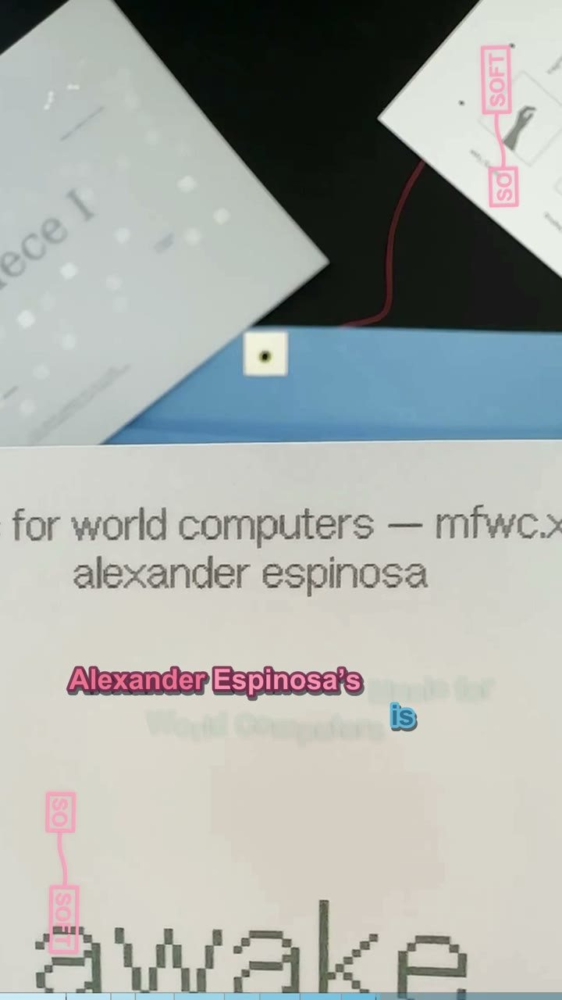
Narration. Alexander Espinosa’s Music for World Computers is a white typographic score: awake, expand, decrease, oxygen, forest, junk, cinnamon, hammer.
Comment with SSF-09 to request a script, timing, image, or crop change.
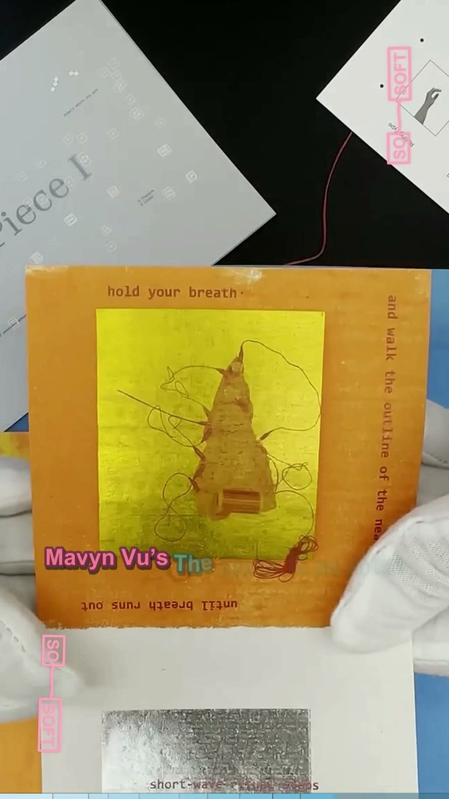
Narration. Mavyn Vu’s The Radio Is an Altar: Portal combines translucent blue and white score cards, a target-like radio image, small figures, and instructions arranged around their edges.
Comment with SSF-10 to request a script, timing, image, or crop change.
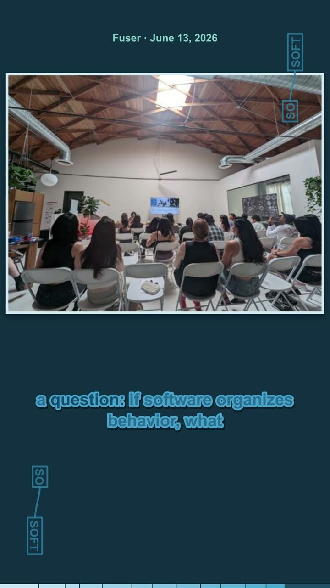
Narration. Casey Reas facilitated the cycle, with Lauren Lee McCarthy and the Social Software community. Together, the contributions open many paths through a question: if software organizes behavior, what else can we ask it to organize? If you’re watching this and know any of the artists involved, feel free to ask them to see their envelope. Each artist received two editions as part of the project: one to keep and one to distribute. This is Jeffrey. Thanks for watching, and a friendly goodbye from me and the Social Software Cohort 2.
Comment with SSF-11 to request a script, timing, image, or crop change.